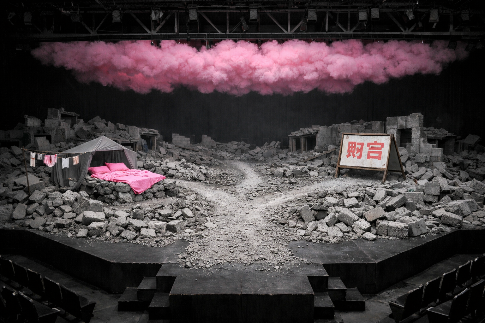
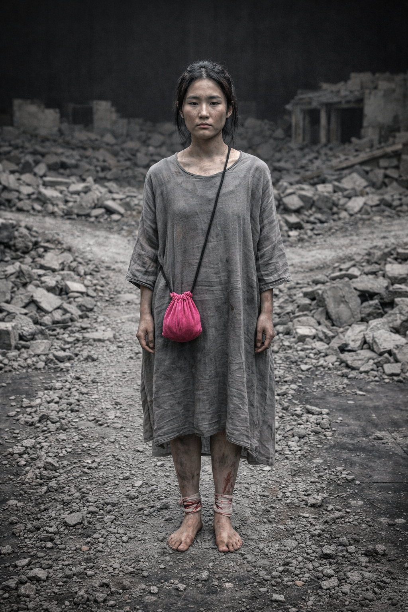
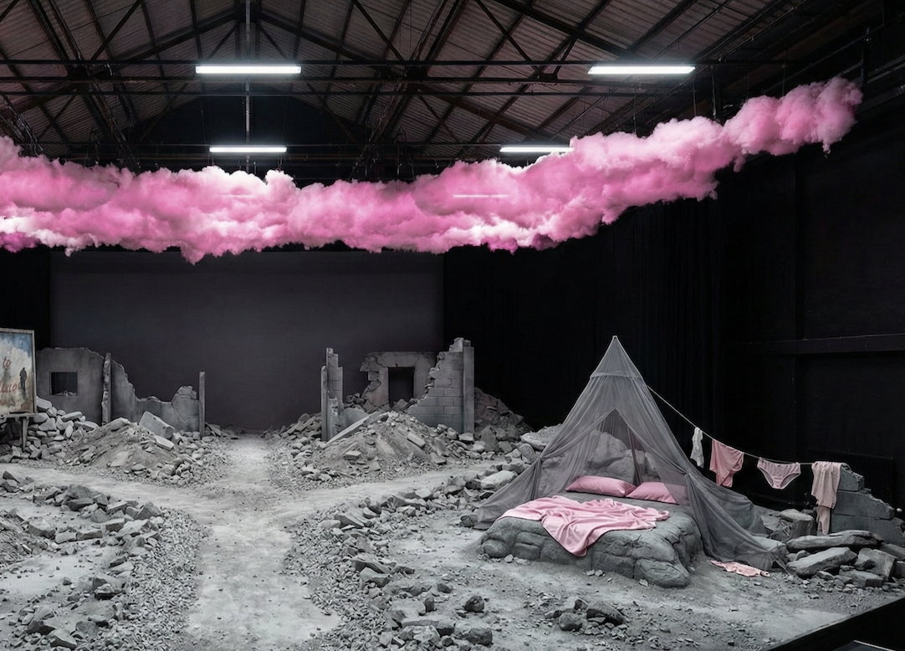
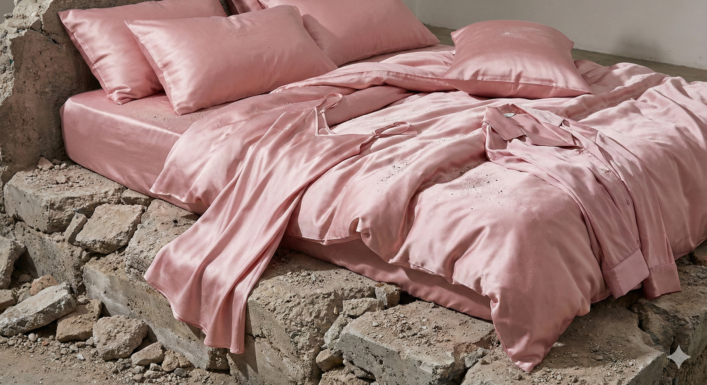
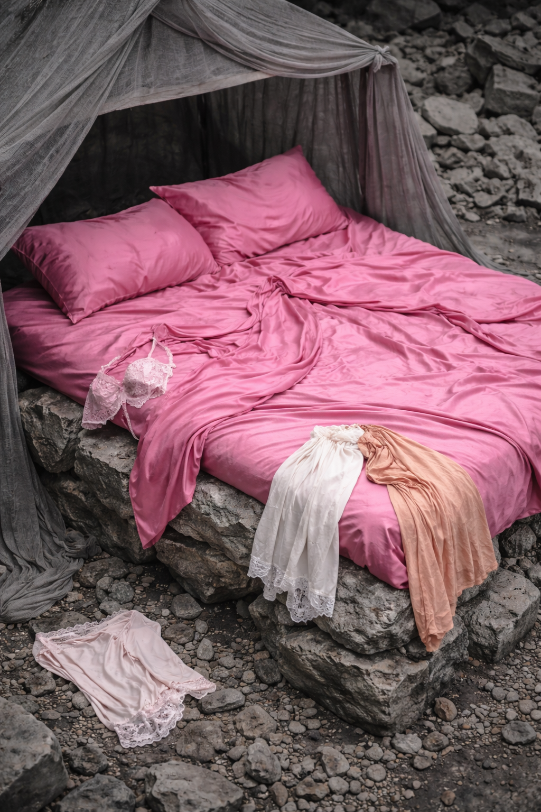
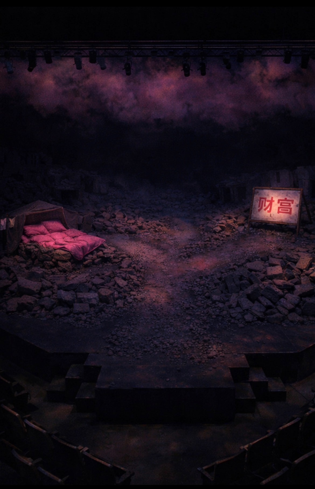
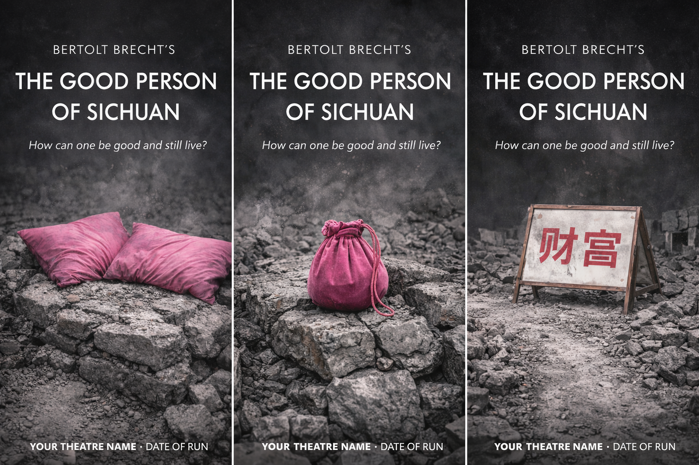
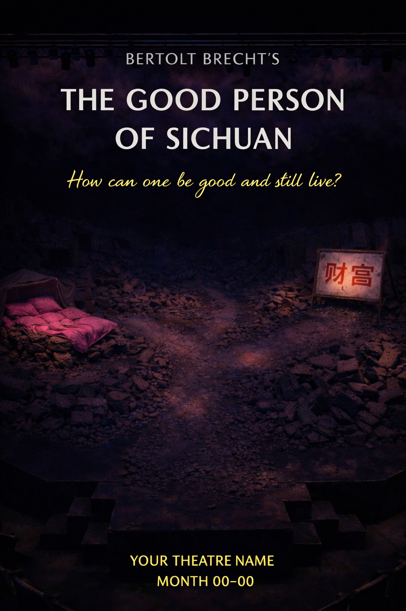

Bertolt Brecht, 1943
A post-earthquake landscape where goodness is economically impossible. Grey rubble stretches across the stage—stone mounds, collapsed dwellings, dust coating everything. A single road forks at centre stage: one path leads to a stone cavity with a painted billboard (the "tobacco shop"), the other to a bed of pink silk sheets beneath a grey gauze tent.
The only colour in this devastation is pink: the bedding, a velvet cross-body pouch, and a layer of fluorescent cotton-candy cloud resting on the exposed ceiling rafters—the gods' heaven, doing nothing, going nowhere.

The earthquake as metaphor: the system has already collapsed, everyone is scrabbling through rubble, and into this comes Shen Te with her absurd, beautiful, doomed pink softness. The forking road makes her impossible choice visible as geography before the audience understands it as plot.
The stage floor is covered entirely in stone mounds, gravel, and earthquake rubble. Grey dust coats everything. A single road of compressed rubble runs from upstage, forking at centre stage into two paths.
Stage right leads to a stone cavity with a painted billboard propped before it—facade capitalism over a hole. Stage left leads to a small mound shaped into a bed beneath a grey gauze tent that blends with the surrounding stones.
The ceiling is exceptionally high and exposed—visible rafters, industrial theatre bones. Resting on these rafters, a thick layer of fluorescent pink fluff stretches across the entire upper space.
Predominantly cold, flat, harsh. The grey landscape under unforgiving light—no shadows to hide in, no warmth. The pink cloud layer glows faintly from within or above, creating a soft rose wash that never quite reaches the stage floor.
When the gods depart at the end, the pink rises visibly into the flies—stagehands' work exposed—leaving only grey and industrial black. No transcendence, just mechanism.
The silk sheets in rubble aren't pathetic; they're an act of war against despair. The underwear drying on stones. The velvet pouch worn cross-body—the only colour Shen Te carries, soft thing in a hard place.
When the pouch is opened: stones. The gods' gift is rubble. She fills her one precious possession with the same grey devastation she's trying to escape.
A painted billboard propped against a stone cavity. Commerce as painted lie—the "business" that's supposed to save her is just a word painted over rubble. The sign reads in Chinese characters, suggesting prosperity, but behind it is only a hole in the collapsed earth.
Austerity pushed to the point of beauty. The grey should feel endless, exhausting, inescapable—and then the pink shocks. Not hope exactly, but stubborn refusal. Evidence of a woman's life persisting: silk pillows in rubble, underwear drying in a disaster zone, a velvet pouch carried through broken glass.
The audience should feel the gravel under their own feet, the dust in their throats, and understand why someone might sell her soul for a pair of shoes.

The same person. The same grey gauze smock. The same pink velvet pouch. The only difference is footwear.
Bare feet, dirty, wounded. Bloody bandages wrap around her soles and ankles—makeshift dressings already soaked through and grey with dust. Her legs show cuts, scrapes, the evidence of walking through a world made of broken things. She bleeds to exist here.
Identical. Same smock, same pouch, same body. But sturdy working shoes on the feet. That's it. The transformation is protection—the willingness to stop bleeding. The entire moral argument in footwear.
A shapeless grey gauze smock—thin, almost transparent in places, the fabric of the rubble-dwellers. It hangs to mid-calf, loose, offering no shape, no seduction. The gauze has the same dusty, ash-covered quality as everything else. She could almost disappear into the stones.
Across her body, the pink velvet drawstring pouch. The only colour she carries. It sits against the grey gauze like a wound, like a heart worn outside the body.
The peasants, relatives, freeloaders—all in grey gauze, faceless, dusty. They emerge from rubble they're indistinguishable from. Not individuals with stories but need itself, materialising. Shen Te bleeds for people who barely exist as people.
Renders, posters, and production materials for a show that lives only in conversation.




Marketing materials for a production that exists only in conversation.


Brecht's thesis is brutal: goodness is economically impossible under capitalism. The system demands exploitation to survive. You cannot be good and live. Shen Te isn't weak—she's structurally trapped.
The forking road makes this visible. She stands at the intersection for every choice, and we watch her walk one way as herself (barefoot, bleeding, toward the bed) or the other as Shui Ta (sturdy shoes, toward the billboard facade).
"How can one be good and still live?"
— The play's central questionThe gods represent hollow ideology that preaches virtue while ignoring material conditions. Their pink heaven floats above the devastation, decorative, inert. When they flee on their cloud at the end, we see the mechanism—stagehands pulling pink batting into the flies. No transcendence. Just theatre.
Brecht set his play in a fictional "Szechwan" that was never meant to be realistic China—it was a distancing device, allowing Western audiences to see their own economic systems reflected back. This production takes that abstraction further: post-earthquake devastation that could be anywhere, any time.
The rubble is universal. The collapse has already happened. Everyone is surviving in the ruins of something that broke long before the play began.
Shen Te bleeds to walk through the world. Shui Ta doesn't. That's capitalism's offer: protection costs you your humanity, but bare feet get shredded.
The audience watches the same person, same smock, same pink pouch—and understands that the only difference between victim and exploiter is who's willing to let their feet be destroyed.
The gods' gift is literally rubble. She carries the weight of the collapsed world in what looks like her only precious thing. Every time she opens it hoping for salvation, there's just more of the same grey devastation. Or she's been collecting stones herself, filling her one soft possession with hardness because that's what survival requires.
Materials and staging notes for the production team.